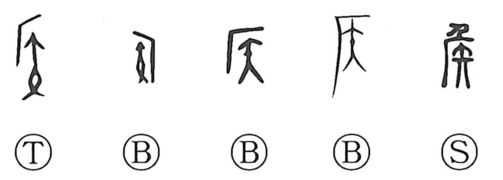

侯

Kun: | On: kou
marquis ・ feudal lord ・ to inquire ・ target
Explanation
In its earliest forms, 侯 depicts an exorcistic rite: beneath the eaves of a roof (the 厂 shape) an arrow is loosed (矢) to drive away malign forces from a dwelling’s perimeter. Later forms add a human figure on the roof, making explicit the act of shooting from above, and with the further addition of the officiant the character settles into 侯. From this ritual background the title extends to the frontier lords (諸侯), posted far from the capital to ward off hostile influences and to scout the outer zones—hence the sense of “to inquire, to reconnoiter.” Because the rite centers on loosing arrows, the character also carries the idea of a “target.”